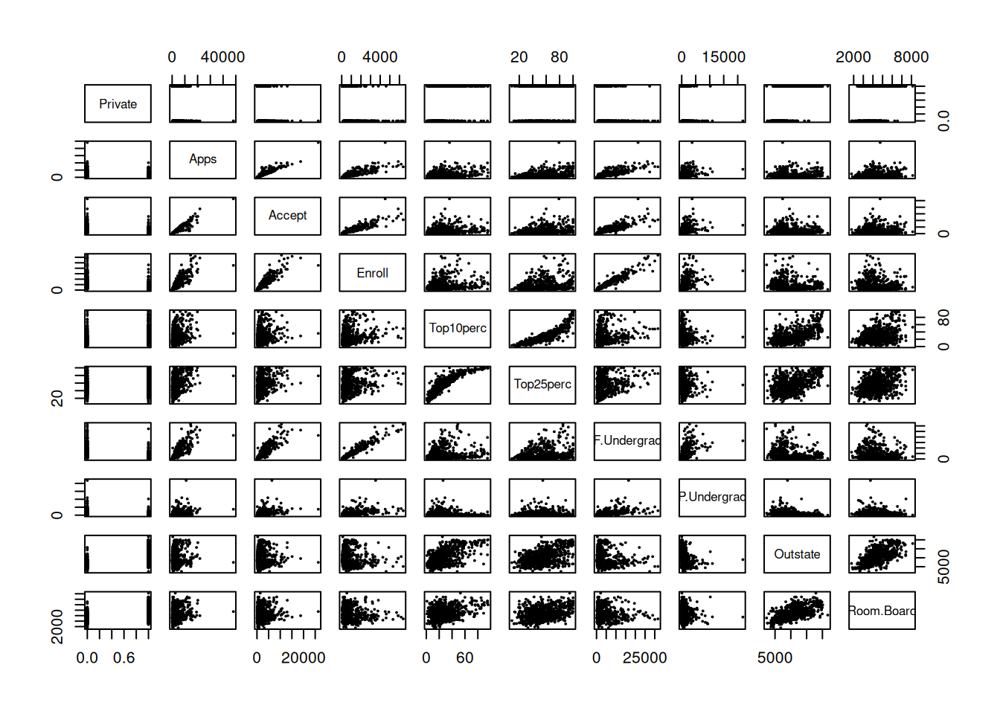

2 Statistical Learning
2.1 Conceptual
2.1.1 Question 1
For each of parts (a) through (d), indicate whether we would generally expect the performance of a flexible statistical learning method to be better or worse than an inflexible method. Justify your answer.
- The sample size n is extremely large, and the number of predictors p is small.
A flexible method would be better in this case, as it can fit the large sample size closer than an inflexible model.
- The number of predictors p is extremely large, and the number of observations n is small.
An inflexible method would be better in this case. A more flexible method would be likely to overfit the small training data set.
- The relationship between the predictors and response is highly non-linear.
A flexible method would be better in this case. A more inflexible method would introduce a high amount of bias to our estimate \(\hat{f}\)
- The variance of the error terms, i.e. \(\sigma^2 = Var(\epsilon)\), is extremely high.
An inflexible method would be better in this case. With a high \(Var(\epsilon)\), there is a large amount of noise in the data set. A flexible method would fit to this noise, increasing the variance of our estimate \(\hat{f}\).
2.1.2 Question 2
Explain whether each scenario is a classification or regression problem, and indicate whether we are most interested in inference or prediction. Finally, provide n and p.
- We collect a set of data on the top 500 firms in the US. For each firm we record profit, number of employees, industry and the CEO salary. We are interested in understanding which factors affect CEO salary.
This is a regression problem, as our response is CEO salary, which is quantitative. We are more interested in inference, as we wish to understand which factors affect the salary. \(n = 500\), \(p = 3\).
- We are considering launching a new product and wish to know whether it will be a success or a failure. We collect data on 20 similar products that were previously launched. For each product we have recorded whether it was a success or failure, price charged for the product, marketing budget, competition price, and ten other variables.
This is a classification problem, as our response is qualitative; there are two possible values, success and failure. We are more interested in prediction, as we wish to know whether the new product will be a success or failure (i.e. we are using the model to predict the response). \(n = 20\), \(p = 13\).
- We are interested in predicting the % change in the USD/Euro exchange rate in relation to the weekly changes in the world stock markets. Hence we collect weekly data for all of 2012. For each week we record the % change in the USD/Euro, the % change in the US market, the % change in the British market, and the % change in the German market.
This is a regression problem, as our response is % change in the exchange rate, which is quantitative. We are more interested in prediction, as we are predicting the % change using the model. \(n = 52\), \(p = 3\).
2.1.3 Question 3
We now revisit the bias-variance decomposition.
Provide a sketch of typical (squared) bias, variance, training error, test error, and Bayes (or irreducible) error curves, on a single plot, as we go from less flexible statistical learning methods towards more flexible approaches. The x-axis should represent the amount of flexibility in the method, and the y-axis should represent the values for each curve. There should be five curves. Make sure to label each one.
Explain why each of the five curves has the shape displayed in part (a).
Squared bias: Squared bias generally decreases as a model gets more flexible, since a more flexible model can approximate a more flexible \(f\).
Variance: Variance generally increases as a model gets more flexible, since a more flexible model fits the training data more closely, so any small change in training data will result in a big change in \(\hat{f}\).
Training error: Training MSE decreases as a model gets more flexible, since a more flexible model fits the training data more closely.
Test error: Test MSE first begins to decrease as the flexibility increases, since the model begins to fit the training data, and therefore \(f\), closer. However, after a certain point, as flexibility continues to increase, test MSE will begin to increase as the model begins to fit the noise present in the training data.
Bayes error: The Bayes (or irreducible) error does not change as the model is changed, i.e. it is fixed, therefore it is a straight horizontal line.
2.1.4 Question 4
You will now think of some real-life applications for statistical learning.
- Describe three real-life applications in which classification might be useful. Describe the response, as well as the predictors. Is the goal of each application inference or prediction? Explain your answer.
Optical character recognition: Recognising characters and digits from images. The predictors would be each pixel of the image, and the response would be the characters in the image. The goal is prediction, as we would like to know, given each pixel, which characters are in the image.
Medical diagnosis: Diagnosing someone based on results of a medical examination. The predictors would be the results of the test, and the response would be the diagnosis. One example of the response given in ISL could be Acute Myelogenous Leukemia, Lymphoblastic Leukemia, or No Leukemia. The goal is prediction, since we are trying to predict a diagnosis given the results.
Customer churn prediction: Predicting whether someone will “churn” (cancel their subscription) or stay subscribed to a subscription service. The predictors could be user demographics, billing history, support interactions and usage history, and the response would be whether the user will churn or stay. The goal is inference; while the model could predict whether a particular person will churn, the model will be much more useful if it is used to see which factors may contribute to churning or staying. For example, if the number of support interactions from customers greatly increases their chance of churning, then the company could improve their customer support.
- Describe three real-life applications in which regression might be useful. Describe the response, as well as the predictors. Is the goal of each application inference or prediction? Explain your answer.
Real estate pricing: Predicting the price of a house. The predictors could be square footage, number of bedrooms, number of bathrooms, location, year built, etc. The response would be the price of the house. The goal is prediction, as we are interested in predicting the price of a particular house to see if it is over- or undervalued. However, inference could also be useful here; we could use the model to see which factors affect the price of a house the most.
Marketing and sales: Predicting how much someone will spend. The predictors could be user demographics, like age, gender and location, or previous purchases. The response would be how much someone is likely to spend on your product. Both inference and prediction could be useful here; prediction tells marketers who to specifically target while inference could tell marketers which kinds of people are more likely to spend more.
Employee training: Predicting performance of employees based on their training. The predictors could be amount of employee training, and various other variables about the employee (e.g. years of education, experience) as a control. The response would be the performance of the employee. Inference would be the main goal here; seeing which variables influence performance could tell the company how long to train their employees, and which employees to prioritise training for.
- Describe three real-life applications in which cluster analysis might be useful.
Customer segmentation: Segmenting customers into different groups based on purchases, demographics or preferences. This can be used to target specific groups for particular advertising campaigns or offers.
Disease classification: One example given in ISL is categorising different cancers based on genetic information.
Natural language processing: Clustering could be used in NLP to group texts/social media posts based on their topic.
2.1.5 Question 5
What are the advantages and disadvantages of a very flexible (versus a less flexible) approach for regression or classification? Under what circumstances might a more flexible approach be preferred to a less flexible approach? When might a less flexible approach be preferred?
2.1.5.1 Flexible
2.1.5.1.1 Advantages
- Decreases bias of model
- More likely for accurate predictions, especially for highly non-linear \(f\)
- More accurate with high sample size \(n\) ##### Disadvantages
- Increases variance of model, so can overfit data
- Hard to interpret, so bad for inference
- Less accurate for lower sample size \(n\)
2.1.5.2 Inflexible
2.1.5.2.1 Advantages
- Decreases variance of model
- Easier to interpret than more flexible models, so good for inference
- Lower sample size \(n\) required ##### Disadvantages
- Increases bias of model
- Not very accurate for highly non-linear \(f\)
A flexible approach would be more preferable with a high sample size or non-linear \(f\). An inflexible approach is more preferable with a low sample size or if inference is the goal of the model.
2.1.6 Question 6
Describe the differences between a parametric and a non-parametric statistical learning approach. What are the advantages of a parametric approach to regression or classification (as opposed to a non-parametric approach)? What are its disadvantages?
In a parametric approach, a form is assumed for \(f\) and the problem is reduced to estimating a set of parameters for that form. In a non-parametric approach, we don’t assume a form for \(f\).
The main advantage of a parametric approach is its simplicity; it is much simpler to estimate a set of parameters, so this will likely be much faster than a non-parametric approach and require a much lower sample size.
However, a parametric approach will be inaccurate if the wrong form for \(f\) is assumed.
2.1.7 Question 7
The table below provides a training data set containing six observations, three predictors, and one qualitative response variable.
Obs. \(X_1\) \(X_2\) \(X_3\) \(Y\) 1 0 3 0 Red 2 2 0 0 Red 3 0 1 3 Red 4 0 1 2 Green 5 -1 0 1 Green 6 1 1 1 Red Suppose we wish to use this data set to make a prediction for \(Y\) when \(X_1 = X_2 = X_3 = 0\) using \(K\)-nearest neighbors.
- Compute the Euclidean distance between each observation and the test point, \(X_1 = X_2 = X_3 = 0\).
dat <- data.frame(
"x1" = c(0, 2, 0, 0, -1, 1),
"x2" = c(3, 0, 1, 1, 0, 1),
"x3" = c(0, 0, 3, 2, 1, 1),
"y" = c("Red", "Red", "Red", "Green", "Green", "Red")
)## [1] 3.000000 2.000000 3.162278 2.236068 1.414214 1.732051
- What is our prediction with \(K = 1\)? Why?
## [1] "Green"The nearest neighbour to point (0, 0, 0) is point 5, which is green.
- What is our prediction with \(K = 3\)? Why?
## [1] "Red"The nearest neighbours to point (0, 0, 0) are points 5, 6 and 2, which are green, red and red respectively. Since there are more red neighbours, we predict (0, 0, 0) to be red.
- If the Bayes decision boundary in this problem is highly non-linear, then would we expect the best value for \(K\) to be large or small? Why?
We would expect \(K\) to be small, since flexibility decreases as \(K\) increases. A more flexible model can fit to a highly non-linear Bayes decision boundary better, so a lower \(K\) value would be better.
2.2 Applied
2.2.1 Question 8
This exercise relates to the
Collegedata set, which can be found in the fileCollege.csv. It contains a number of variables for 777 different universities and colleges in the US. The variables are
Private: Public/private indicatorApps: Number of applications receivedAccept: Number of applicants acceptedEnroll: Number of new students enrolledTop10perc: New students from top 10% of high school classTop25perc: New students from top 25% of high school classF.Undergrad: Number of full-time undergraduatesP.Undergrad: Number of part-time undergraduatesOutstate: Out-of-state tuitionRoom.Board: Room and board costsBooks: Estimated book costsPersonal: Estimated personal spendingPhD: Percent of faculty with Ph.D.’sTerminal: Percent of faculty with terminal degreeS.F.Ratio: Student/faculty ratioperc.alumni: Percent of alumni who donateExpend: Instructional expenditure per studentGrad.Rate: Graduation rateBefore reading the data into
R, it can be viewed in Excel or a text editor.
- Use the
read.csv()function to read the data intoR. Call the loaded datacollege. Make sure that you have the directory set to the correct location for the data.
Look at the data using the
View()function. You should notice that the first column is just the name of each university. We don’t really wantRto treat this as data. However, it may be handy to have these names for later. Try the following commands:You should see that there is now a
row.namescolumn with the name of each university recorded. This means that R has given each row a name corresponding to the appropriate university.Rwill not try to perform calculations on the row names. However, we still need to eliminate the first column in the data where the names are stored. TryNow you should see that the first data column is
Private. Note that another column labeledrow.namesnow appears before thePrivatecolumn. However, this is not a data column but rather the name that R is giving to each row.
- Use the
summary()function to produce a numerical summary of the variables in the data set.
## Private Apps Accept Enroll
## Length:777 Min. : 81 Min. : 72 Min. : 35
## Class :character 1st Qu.: 776 1st Qu.: 604 1st Qu.: 242
## Mode :character Median : 1558 Median : 1110 Median : 434
## Mean : 3002 Mean : 2019 Mean : 780
## 3rd Qu.: 3624 3rd Qu.: 2424 3rd Qu.: 902
## Max. :48094 Max. :26330 Max. :6392
## Top10perc Top25perc F.Undergrad P.Undergrad
## Min. : 1.00 Min. : 9.0 Min. : 139 Min. : 1.0
## 1st Qu.:15.00 1st Qu.: 41.0 1st Qu.: 992 1st Qu.: 95.0
## Median :23.00 Median : 54.0 Median : 1707 Median : 353.0
## Mean :27.56 Mean : 55.8 Mean : 3700 Mean : 855.3
## 3rd Qu.:35.00 3rd Qu.: 69.0 3rd Qu.: 4005 3rd Qu.: 967.0
## Max. :96.00 Max. :100.0 Max. :31643 Max. :21836.0
## Outstate Room.Board Books Personal
## Min. : 2340 Min. :1780 Min. : 96.0 Min. : 250
## 1st Qu.: 7320 1st Qu.:3597 1st Qu.: 470.0 1st Qu.: 850
## Median : 9990 Median :4200 Median : 500.0 Median :1200
## Mean :10441 Mean :4358 Mean : 549.4 Mean :1341
## 3rd Qu.:12925 3rd Qu.:5050 3rd Qu.: 600.0 3rd Qu.:1700
## Max. :21700 Max. :8124 Max. :2340.0 Max. :6800
## PhD Terminal S.F.Ratio perc.alumni
## Min. : 8.00 Min. : 24.0 Min. : 2.50 Min. : 0.00
## 1st Qu.: 62.00 1st Qu.: 71.0 1st Qu.:11.50 1st Qu.:13.00
## Median : 75.00 Median : 82.0 Median :13.60 Median :21.00
## Mean : 72.66 Mean : 79.7 Mean :14.09 Mean :22.74
## 3rd Qu.: 85.00 3rd Qu.: 92.0 3rd Qu.:16.50 3rd Qu.:31.00
## Max. :103.00 Max. :100.0 Max. :39.80 Max. :64.00
## Expend Grad.Rate
## Min. : 3186 Min. : 10.00
## 1st Qu.: 6751 1st Qu.: 53.00
## Median : 8377 Median : 65.00
## Mean : 9660 Mean : 65.46
## 3rd Qu.:10830 3rd Qu.: 78.00
## Max. :56233 Max. :118.00ii. Use the `pairs()` function to produce a scatterplot matrix of the first ten columns or variables of the data. Recall that you can reference the first ten columns of a matrix A using `A[,1:10]`.

iii. Use the `plot()` function to produce side-by-side boxplots of `Outstate` versus `Private`.
iv. Create a new qualitative variable, called `Elite`, by _binning_ the `Top10perc` variable. We are going to divide universities into two groups based on whether or not the proportion of students coming from the top 10% of their high school classes exceeds 50%. ```r > Elite <- rep("No", nrow(college)) > Elite[college$Top10perc > 50] <- "Yes" > Elite <- as.factor(Elite) > college <- data.frame(college, Elite) ``` Use the `summary()` function to see how many elite universities there are. Now use the `plot()` function to produce side-by-side boxplots of `Outstate` versus `Elite`.
Elite <- rep("No", nrow(college))
Elite[college$Top10perc > 50] <- "Yes"
Elite <- as.factor(Elite)
college <- data.frame(college, Elite)## No Yes
## 699 78v. Use the `hist()` function to produce some histograms with differing numbers of bins for a few of the quantitative variables. You may find the command `par(mfrow=c(2,2))` useful: it will divide the print window into four regions so that four plots can be made simultaneously. Modifying the arguments to this function will divide the screen in other ways.
par(mfrow=c(2,2))
hist(college$Outstate, xlab="Outstate", main="", n=5)
hist(college$Outstate, xlab="Outstate", main="", n=10)
hist(college$Outstate, xlab="Outstate", main="", n=25)
hist(college$Outstate, xlab="Outstate", main="", n=50)par(mfrow=c(2,2))
hist(college$Enroll, xlab="Enroll", main="", n=5)
hist(college$Enroll, xlab="Enroll", main="", n=10)
hist(college$Enroll, xlab="Enroll", main="", n=25)
hist(college$Enroll, xlab="Enroll", main="", n=50)par(mfrow=c(2,2))
hist(college$Apps, xlab="Apps", main="", n=5)
hist(college$Apps, xlab="Apps", main="", n=10)
hist(college$Apps, xlab="Apps", main="", n=25)
hist(college$Apps, xlab="Apps", main="", n=50)vi. Continue exploring the data, and provide a brief summary of what you discover.
On average, “elite” colleges (those where 50% of their students were in the top 10% of their high school class) have a higher expenditure per student, a higher proportion of PhDs in their faculty, and a higher graduation rate.
83.33% of “elite” colleges are also private.
2.2.2 Question 9
This exercise involves the Auto data set studied in the lab. Make sure that the missing values have been removed from the data.
auto <- read.table("data/Auto.data", header=T, na.strings="?", stringsAsFactors=T)
auto <- na.omit(auto)
- Which of the predictors are quantitative, and which are qualitative?
mpg, displacement, horsepower, weight and acceleration are quantitative, and cylinders, year, origin and name are qualitative.
- What is the range of each quantitative predictor? You can answer this using the
range()function.
## [1] 37.6## [1] 387## [1] 184## [1] 3527## [1] 16.8
- What is the mean and standard deviation of each quantitative predictor?
## [1] 23.44592## [1] 7.805007## [1] 194.412## [1] 7.805007## [1] 104.4694## [1] 7.805007## [1] 2977.584## [1] 7.805007## [1] 15.54133## [1] 7.805007
- Now remove the 10th through 85th observations. What is the range, mean, and standard deviation of each predictor in the subset of the data that remains?
## [1] 24.40443## [1] 7.867283## [1] 187.2405## [1] 7.867283## [1] 100.7215## [1] 7.867283## [1] 2935.972## [1] 7.867283## [1] 15.7269## [1] 7.867283
- Using the full data set, investigate the predictors graphically, using scatterplots or other tools of your choice. Create some plots highlighting the relationships among the predictors. Comment on your findings.
auto <- read.table("data/Auto.data", header=T, na.strings="?", stringsAsFactors=T)
auto <- na.omit(auto)
Many of the variables are correlated, for example mpg is negatively correlated with displacement, weight is positively correlated with horsepower etc.
> f. Suppose that we wish to predict gas mileage (mpg) on the basis of the
> other variables. Do your plots suggest that any of the other variables
> might be useful in predicting mpg? Justify your answer.
Displacement, horsepower and weight are highly correlated with mpg, so they may be useful in predicting it.
2.2.3 Question 10
This exercise involves the
Bostonhousing data set.
To begin, load in the
Bostondata set. TheBostondata set is part of theISLR2library in R.
Now the data set is contained in the object
Boston.
## crim zn indus chas nox rm age dis rad tax ptratio lstat
## 1 0.00632 18.0 2.31 0 0.5380 6.575 65.2 4.0900 1 296 15.3 4.98
## 2 0.02731 0.0 7.07 0 0.4690 6.421 78.9 4.9671 2 242 17.8 9.14
## 3 0.02729 0.0 7.07 0 0.4690 7.185 61.1 4.9671 2 242 17.8 4.03
## 4 0.03237 0.0 2.18 0 0.4580 6.998 45.8 6.0622 3 222 18.7 2.94
## 5 0.06905 0.0 2.18 0 0.4580 7.147 54.2 6.0622 3 222 18.7 5.33
## 6 0.02985 0.0 2.18 0 0.4580 6.430 58.7 6.0622 3 222 18.7 5.21
## 7 0.08829 12.5 7.87 0 0.5240 6.012 66.6 5.5605 5 311 15.2 12.43
## 8 0.14455 12.5 7.87 0 0.5240 6.172 96.1 5.9505 5 311 15.2 19.15
## 9 0.21124 12.5 7.87 0 0.5240 5.631 100.0 6.0821 5 311 15.2 29.93
## 10 0.17004 12.5 7.87 0 0.5240 6.004 85.9 6.5921 5 311 15.2 17.10
## 11 0.22489 12.5 7.87 0 0.5240 6.377 94.3 6.3467 5 311 15.2 20.45
## 12 0.11747 12.5 7.87 0 0.5240 6.009 82.9 6.2267 5 311 15.2 13.27
## 13 0.09378 12.5 7.87 0 0.5240 5.889 39.0 5.4509 5 311 15.2 15.71
## 14 0.62976 0.0 8.14 0 0.5380 5.949 61.8 4.7075 4 307 21.0 8.26
## 15 0.63796 0.0 8.14 0 0.5380 6.096 84.5 4.4619 4 307 21.0 10.26
## 16 0.62739 0.0 8.14 0 0.5380 5.834 56.5 4.4986 4 307 21.0 8.47
## 17 1.05393 0.0 8.14 0 0.5380 5.935 29.3 4.4986 4 307 21.0 6.58
## 18 0.78420 0.0 8.14 0 0.5380 5.990 81.7 4.2579 4 307 21.0 14.67
## 19 0.80271 0.0 8.14 0 0.5380 5.456 36.6 3.7965 4 307 21.0 11.69
## 20 0.72580 0.0 8.14 0 0.5380 5.727 69.5 3.7965 4 307 21.0 11.28
## 21 1.25179 0.0 8.14 0 0.5380 5.570 98.1 3.7979 4 307 21.0 21.02
## 22 0.85204 0.0 8.14 0 0.5380 5.965 89.2 4.0123 4 307 21.0 13.83
## 23 1.23247 0.0 8.14 0 0.5380 6.142 91.7 3.9769 4 307 21.0 18.72
## 24 0.98843 0.0 8.14 0 0.5380 5.813 100.0 4.0952 4 307 21.0 19.88
## 25 0.75026 0.0 8.14 0 0.5380 5.924 94.1 4.3996 4 307 21.0 16.30
## 26 0.84054 0.0 8.14 0 0.5380 5.599 85.7 4.4546 4 307 21.0 16.51
## 27 0.67191 0.0 8.14 0 0.5380 5.813 90.3 4.6820 4 307 21.0 14.81
## 28 0.95577 0.0 8.14 0 0.5380 6.047 88.8 4.4534 4 307 21.0 17.28
## 29 0.77299 0.0 8.14 0 0.5380 6.495 94.4 4.4547 4 307 21.0 12.80
## 30 1.00245 0.0 8.14 0 0.5380 6.674 87.3 4.2390 4 307 21.0 11.98
## 31 1.13081 0.0 8.14 0 0.5380 5.713 94.1 4.2330 4 307 21.0 22.60
## 32 1.35472 0.0 8.14 0 0.5380 6.072 100.0 4.1750 4 307 21.0 13.04
## 33 1.38799 0.0 8.14 0 0.5380 5.950 82.0 3.9900 4 307 21.0 27.71
## 34 1.15172 0.0 8.14 0 0.5380 5.701 95.0 3.7872 4 307 21.0 18.35
## 35 1.61282 0.0 8.14 0 0.5380 6.096 96.9 3.7598 4 307 21.0 20.34
## 36 0.06417 0.0 5.96 0 0.4990 5.933 68.2 3.3603 5 279 19.2 9.68
## 37 0.09744 0.0 5.96 0 0.4990 5.841 61.4 3.3779 5 279 19.2 11.41
## 38 0.08014 0.0 5.96 0 0.4990 5.850 41.5 3.9342 5 279 19.2 8.77
## 39 0.17505 0.0 5.96 0 0.4990 5.966 30.2 3.8473 5 279 19.2 10.13
## 40 0.02763 75.0 2.95 0 0.4280 6.595 21.8 5.4011 3 252 18.3 4.32
## 41 0.03359 75.0 2.95 0 0.4280 7.024 15.8 5.4011 3 252 18.3 1.98
## 42 0.12744 0.0 6.91 0 0.4480 6.770 2.9 5.7209 3 233 17.9 4.84
## 43 0.14150 0.0 6.91 0 0.4480 6.169 6.6 5.7209 3 233 17.9 5.81
## 44 0.15936 0.0 6.91 0 0.4480 6.211 6.5 5.7209 3 233 17.9 7.44
## 45 0.12269 0.0 6.91 0 0.4480 6.069 40.0 5.7209 3 233 17.9 9.55
## 46 0.17142 0.0 6.91 0 0.4480 5.682 33.8 5.1004 3 233 17.9 10.21
## 47 0.18836 0.0 6.91 0 0.4480 5.786 33.3 5.1004 3 233 17.9 14.15
## 48 0.22927 0.0 6.91 0 0.4480 6.030 85.5 5.6894 3 233 17.9 18.80
## 49 0.25387 0.0 6.91 0 0.4480 5.399 95.3 5.8700 3 233 17.9 30.81
## 50 0.21977 0.0 6.91 0 0.4480 5.602 62.0 6.0877 3 233 17.9 16.20
## 51 0.08873 21.0 5.64 0 0.4390 5.963 45.7 6.8147 4 243 16.8 13.45
## 52 0.04337 21.0 5.64 0 0.4390 6.115 63.0 6.8147 4 243 16.8 9.43
## 53 0.05360 21.0 5.64 0 0.4390 6.511 21.1 6.8147 4 243 16.8 5.28
## 54 0.04981 21.0 5.64 0 0.4390 5.998 21.4 6.8147 4 243 16.8 8.43
## 55 0.01360 75.0 4.00 0 0.4100 5.888 47.6 7.3197 3 469 21.1 14.80
## 56 0.01311 90.0 1.22 0 0.4030 7.249 21.9 8.6966 5 226 17.9 4.81
## 57 0.02055 85.0 0.74 0 0.4100 6.383 35.7 9.1876 2 313 17.3 5.77
## 58 0.01432 100.0 1.32 0 0.4110 6.816 40.5 8.3248 5 256 15.1 3.95
## 59 0.15445 25.0 5.13 0 0.4530 6.145 29.2 7.8148 8 284 19.7 6.86
## 60 0.10328 25.0 5.13 0 0.4530 5.927 47.2 6.9320 8 284 19.7 9.22
## 61 0.14932 25.0 5.13 0 0.4530 5.741 66.2 7.2254 8 284 19.7 13.15
## 62 0.17171 25.0 5.13 0 0.4530 5.966 93.4 6.8185 8 284 19.7 14.44
## 63 0.11027 25.0 5.13 0 0.4530 6.456 67.8 7.2255 8 284 19.7 6.73
## 64 0.12650 25.0 5.13 0 0.4530 6.762 43.4 7.9809 8 284 19.7 9.50
## 65 0.01951 17.5 1.38 0 0.4161 7.104 59.5 9.2229 3 216 18.6 8.05
## 66 0.03584 80.0 3.37 0 0.3980 6.290 17.8 6.6115 4 337 16.1 4.67
## 67 0.04379 80.0 3.37 0 0.3980 5.787 31.1 6.6115 4 337 16.1 10.24
## 68 0.05789 12.5 6.07 0 0.4090 5.878 21.4 6.4980 4 345 18.9 8.10
## 69 0.13554 12.5 6.07 0 0.4090 5.594 36.8 6.4980 4 345 18.9 13.09
## 70 0.12816 12.5 6.07 0 0.4090 5.885 33.0 6.4980 4 345 18.9 8.79
## 71 0.08826 0.0 10.81 0 0.4130 6.417 6.6 5.2873 4 305 19.2 6.72
## 72 0.15876 0.0 10.81 0 0.4130 5.961 17.5 5.2873 4 305 19.2 9.88
## 73 0.09164 0.0 10.81 0 0.4130 6.065 7.8 5.2873 4 305 19.2 5.52
## 74 0.19539 0.0 10.81 0 0.4130 6.245 6.2 5.2873 4 305 19.2 7.54
## 75 0.07896 0.0 12.83 0 0.4370 6.273 6.0 4.2515 5 398 18.7 6.78
## 76 0.09512 0.0 12.83 0 0.4370 6.286 45.0 4.5026 5 398 18.7 8.94
## 77 0.10153 0.0 12.83 0 0.4370 6.279 74.5 4.0522 5 398 18.7 11.97
## 78 0.08707 0.0 12.83 0 0.4370 6.140 45.8 4.0905 5 398 18.7 10.27
## 79 0.05646 0.0 12.83 0 0.4370 6.232 53.7 5.0141 5 398 18.7 12.34
## 80 0.08387 0.0 12.83 0 0.4370 5.874 36.6 4.5026 5 398 18.7 9.10
## 81 0.04113 25.0 4.86 0 0.4260 6.727 33.5 5.4007 4 281 19.0 5.29
## 82 0.04462 25.0 4.86 0 0.4260 6.619 70.4 5.4007 4 281 19.0 7.22
## 83 0.03659 25.0 4.86 0 0.4260 6.302 32.2 5.4007 4 281 19.0 6.72
## 84 0.03551 25.0 4.86 0 0.4260 6.167 46.7 5.4007 4 281 19.0 7.51
## 85 0.05059 0.0 4.49 0 0.4490 6.389 48.0 4.7794 3 247 18.5 9.62
## 86 0.05735 0.0 4.49 0 0.4490 6.630 56.1 4.4377 3 247 18.5 6.53
## 87 0.05188 0.0 4.49 0 0.4490 6.015 45.1 4.4272 3 247 18.5 12.86
## 88 0.07151 0.0 4.49 0 0.4490 6.121 56.8 3.7476 3 247 18.5 8.44
## 89 0.05660 0.0 3.41 0 0.4890 7.007 86.3 3.4217 2 270 17.8 5.50
## 90 0.05302 0.0 3.41 0 0.4890 7.079 63.1 3.4145 2 270 17.8 5.70
## 91 0.04684 0.0 3.41 0 0.4890 6.417 66.1 3.0923 2 270 17.8 8.81
## 92 0.03932 0.0 3.41 0 0.4890 6.405 73.9 3.0921 2 270 17.8 8.20
## 93 0.04203 28.0 15.04 0 0.4640 6.442 53.6 3.6659 4 270 18.2 8.16
## 94 0.02875 28.0 15.04 0 0.4640 6.211 28.9 3.6659 4 270 18.2 6.21
## 95 0.04294 28.0 15.04 0 0.4640 6.249 77.3 3.6150 4 270 18.2 10.59
## 96 0.12204 0.0 2.89 0 0.4450 6.625 57.8 3.4952 2 276 18.0 6.65
## 97 0.11504 0.0 2.89 0 0.4450 6.163 69.6 3.4952 2 276 18.0 11.34
## 98 0.12083 0.0 2.89 0 0.4450 8.069 76.0 3.4952 2 276 18.0 4.21
## 99 0.08187 0.0 2.89 0 0.4450 7.820 36.9 3.4952 2 276 18.0 3.57
## 100 0.06860 0.0 2.89 0 0.4450 7.416 62.5 3.4952 2 276 18.0 6.19
## 101 0.14866 0.0 8.56 0 0.5200 6.727 79.9 2.7778 5 384 20.9 9.42
## 102 0.11432 0.0 8.56 0 0.5200 6.781 71.3 2.8561 5 384 20.9 7.67
## 103 0.22876 0.0 8.56 0 0.5200 6.405 85.4 2.7147 5 384 20.9 10.63
## 104 0.21161 0.0 8.56 0 0.5200 6.137 87.4 2.7147 5 384 20.9 13.44
## 105 0.13960 0.0 8.56 0 0.5200 6.167 90.0 2.4210 5 384 20.9 12.33
## 106 0.13262 0.0 8.56 0 0.5200 5.851 96.7 2.1069 5 384 20.9 16.47
## 107 0.17120 0.0 8.56 0 0.5200 5.836 91.9 2.2110 5 384 20.9 18.66
## 108 0.13117 0.0 8.56 0 0.5200 6.127 85.2 2.1224 5 384 20.9 14.09
## 109 0.12802 0.0 8.56 0 0.5200 6.474 97.1 2.4329 5 384 20.9 12.27
## 110 0.26363 0.0 8.56 0 0.5200 6.229 91.2 2.5451 5 384 20.9 15.55
## 111 0.10793 0.0 8.56 0 0.5200 6.195 54.4 2.7778 5 384 20.9 13.00
## 112 0.10084 0.0 10.01 0 0.5470 6.715 81.6 2.6775 6 432 17.8 10.16
## 113 0.12329 0.0 10.01 0 0.5470 5.913 92.9 2.3534 6 432 17.8 16.21
## 114 0.22212 0.0 10.01 0 0.5470 6.092 95.4 2.5480 6 432 17.8 17.09
## 115 0.14231 0.0 10.01 0 0.5470 6.254 84.2 2.2565 6 432 17.8 10.45
## 116 0.17134 0.0 10.01 0 0.5470 5.928 88.2 2.4631 6 432 17.8 15.76
## 117 0.13158 0.0 10.01 0 0.5470 6.176 72.5 2.7301 6 432 17.8 12.04
## 118 0.15098 0.0 10.01 0 0.5470 6.021 82.6 2.7474 6 432 17.8 10.30
## 119 0.13058 0.0 10.01 0 0.5470 5.872 73.1 2.4775 6 432 17.8 15.37
## 120 0.14476 0.0 10.01 0 0.5470 5.731 65.2 2.7592 6 432 17.8 13.61
## 121 0.06899 0.0 25.65 0 0.5810 5.870 69.7 2.2577 2 188 19.1 14.37
## 122 0.07165 0.0 25.65 0 0.5810 6.004 84.1 2.1974 2 188 19.1 14.27
## 123 0.09299 0.0 25.65 0 0.5810 5.961 92.9 2.0869 2 188 19.1 17.93
## 124 0.15038 0.0 25.65 0 0.5810 5.856 97.0 1.9444 2 188 19.1 25.41
## 125 0.09849 0.0 25.65 0 0.5810 5.879 95.8 2.0063 2 188 19.1 17.58
## 126 0.16902 0.0 25.65 0 0.5810 5.986 88.4 1.9929 2 188 19.1 14.81
## 127 0.38735 0.0 25.65 0 0.5810 5.613 95.6 1.7572 2 188 19.1 27.26
## 128 0.25915 0.0 21.89 0 0.6240 5.693 96.0 1.7883 4 437 21.2 17.19
## 129 0.32543 0.0 21.89 0 0.6240 6.431 98.8 1.8125 4 437 21.2 15.39
## 130 0.88125 0.0 21.89 0 0.6240 5.637 94.7 1.9799 4 437 21.2 18.34
## 131 0.34006 0.0 21.89 0 0.6240 6.458 98.9 2.1185 4 437 21.2 12.60
## 132 1.19294 0.0 21.89 0 0.6240 6.326 97.7 2.2710 4 437 21.2 12.26
## 133 0.59005 0.0 21.89 0 0.6240 6.372 97.9 2.3274 4 437 21.2 11.12
## 134 0.32982 0.0 21.89 0 0.6240 5.822 95.4 2.4699 4 437 21.2 15.03
## 135 0.97617 0.0 21.89 0 0.6240 5.757 98.4 2.3460 4 437 21.2 17.31
## 136 0.55778 0.0 21.89 0 0.6240 6.335 98.2 2.1107 4 437 21.2 16.96
## 137 0.32264 0.0 21.89 0 0.6240 5.942 93.5 1.9669 4 437 21.2 16.90
## 138 0.35233 0.0 21.89 0 0.6240 6.454 98.4 1.8498 4 437 21.2 14.59
## 139 0.24980 0.0 21.89 0 0.6240 5.857 98.2 1.6686 4 437 21.2 21.32
## 140 0.54452 0.0 21.89 0 0.6240 6.151 97.9 1.6687 4 437 21.2 18.46
## 141 0.29090 0.0 21.89 0 0.6240 6.174 93.6 1.6119 4 437 21.2 24.16
## 142 1.62864 0.0 21.89 0 0.6240 5.019 100.0 1.4394 4 437 21.2 34.41
## 143 3.32105 0.0 19.58 1 0.8710 5.403 100.0 1.3216 5 403 14.7 26.82
## 144 4.09740 0.0 19.58 0 0.8710 5.468 100.0 1.4118 5 403 14.7 26.42
## 145 2.77974 0.0 19.58 0 0.8710 4.903 97.8 1.3459 5 403 14.7 29.29
## 146 2.37934 0.0 19.58 0 0.8710 6.130 100.0 1.4191 5 403 14.7 27.80
## 147 2.15505 0.0 19.58 0 0.8710 5.628 100.0 1.5166 5 403 14.7 16.65
## 148 2.36862 0.0 19.58 0 0.8710 4.926 95.7 1.4608 5 403 14.7 29.53
## 149 2.33099 0.0 19.58 0 0.8710 5.186 93.8 1.5296 5 403 14.7 28.32
## 150 2.73397 0.0 19.58 0 0.8710 5.597 94.9 1.5257 5 403 14.7 21.45
## 151 1.65660 0.0 19.58 0 0.8710 6.122 97.3 1.6180 5 403 14.7 14.10
## 152 1.49632 0.0 19.58 0 0.8710 5.404 100.0 1.5916 5 403 14.7 13.28
## 153 1.12658 0.0 19.58 1 0.8710 5.012 88.0 1.6102 5 403 14.7 12.12
## 154 2.14918 0.0 19.58 0 0.8710 5.709 98.5 1.6232 5 403 14.7 15.79
## 155 1.41385 0.0 19.58 1 0.8710 6.129 96.0 1.7494 5 403 14.7 15.12
## 156 3.53501 0.0 19.58 1 0.8710 6.152 82.6 1.7455 5 403 14.7 15.02
## 157 2.44668 0.0 19.58 0 0.8710 5.272 94.0 1.7364 5 403 14.7 16.14
## 158 1.22358 0.0 19.58 0 0.6050 6.943 97.4 1.8773 5 403 14.7 4.59
## 159 1.34284 0.0 19.58 0 0.6050 6.066 100.0 1.7573 5 403 14.7 6.43
## 160 1.42502 0.0 19.58 0 0.8710 6.510 100.0 1.7659 5 403 14.7 7.39
## 161 1.27346 0.0 19.58 1 0.6050 6.250 92.6 1.7984 5 403 14.7 5.50
## 162 1.46336 0.0 19.58 0 0.6050 7.489 90.8 1.9709 5 403 14.7 1.73
## 163 1.83377 0.0 19.58 1 0.6050 7.802 98.2 2.0407 5 403 14.7 1.92
## 164 1.51902 0.0 19.58 1 0.6050 8.375 93.9 2.1620 5 403 14.7 3.32
## 165 2.24236 0.0 19.58 0 0.6050 5.854 91.8 2.4220 5 403 14.7 11.64
## 166 2.92400 0.0 19.58 0 0.6050 6.101 93.0 2.2834 5 403 14.7 9.81
## 167 2.01019 0.0 19.58 0 0.6050 7.929 96.2 2.0459 5 403 14.7 3.70
## 168 1.80028 0.0 19.58 0 0.6050 5.877 79.2 2.4259 5 403 14.7 12.14
## 169 2.30040 0.0 19.58 0 0.6050 6.319 96.1 2.1000 5 403 14.7 11.10
## 170 2.44953 0.0 19.58 0 0.6050 6.402 95.2 2.2625 5 403 14.7 11.32
## 171 1.20742 0.0 19.58 0 0.6050 5.875 94.6 2.4259 5 403 14.7 14.43
## 172 2.31390 0.0 19.58 0 0.6050 5.880 97.3 2.3887 5 403 14.7 12.03
## 173 0.13914 0.0 4.05 0 0.5100 5.572 88.5 2.5961 5 296 16.6 14.69
## 174 0.09178 0.0 4.05 0 0.5100 6.416 84.1 2.6463 5 296 16.6 9.04
## 175 0.08447 0.0 4.05 0 0.5100 5.859 68.7 2.7019 5 296 16.6 9.64
## 176 0.06664 0.0 4.05 0 0.5100 6.546 33.1 3.1323 5 296 16.6 5.33
## 177 0.07022 0.0 4.05 0 0.5100 6.020 47.2 3.5549 5 296 16.6 10.11
## 178 0.05425 0.0 4.05 0 0.5100 6.315 73.4 3.3175 5 296 16.6 6.29
## 179 0.06642 0.0 4.05 0 0.5100 6.860 74.4 2.9153 5 296 16.6 6.92
## 180 0.05780 0.0 2.46 0 0.4880 6.980 58.4 2.8290 3 193 17.8 5.04
## 181 0.06588 0.0 2.46 0 0.4880 7.765 83.3 2.7410 3 193 17.8 7.56
## 182 0.06888 0.0 2.46 0 0.4880 6.144 62.2 2.5979 3 193 17.8 9.45
## 183 0.09103 0.0 2.46 0 0.4880 7.155 92.2 2.7006 3 193 17.8 4.82
## 184 0.10008 0.0 2.46 0 0.4880 6.563 95.6 2.8470 3 193 17.8 5.68
## 185 0.08308 0.0 2.46 0 0.4880 5.604 89.8 2.9879 3 193 17.8 13.98
## 186 0.06047 0.0 2.46 0 0.4880 6.153 68.8 3.2797 3 193 17.8 13.15
## 187 0.05602 0.0 2.46 0 0.4880 7.831 53.6 3.1992 3 193 17.8 4.45
## 188 0.07875 45.0 3.44 0 0.4370 6.782 41.1 3.7886 5 398 15.2 6.68
## 189 0.12579 45.0 3.44 0 0.4370 6.556 29.1 4.5667 5 398 15.2 4.56
## 190 0.08370 45.0 3.44 0 0.4370 7.185 38.9 4.5667 5 398 15.2 5.39
## 191 0.09068 45.0 3.44 0 0.4370 6.951 21.5 6.4798 5 398 15.2 5.10
## 192 0.06911 45.0 3.44 0 0.4370 6.739 30.8 6.4798 5 398 15.2 4.69
## 193 0.08664 45.0 3.44 0 0.4370 7.178 26.3 6.4798 5 398 15.2 2.87
## 194 0.02187 60.0 2.93 0 0.4010 6.800 9.9 6.2196 1 265 15.6 5.03
## 195 0.01439 60.0 2.93 0 0.4010 6.604 18.8 6.2196 1 265 15.6 4.38
## 196 0.01381 80.0 0.46 0 0.4220 7.875 32.0 5.6484 4 255 14.4 2.97
## 197 0.04011 80.0 1.52 0 0.4040 7.287 34.1 7.3090 2 329 12.6 4.08
## 198 0.04666 80.0 1.52 0 0.4040 7.107 36.6 7.3090 2 329 12.6 8.61
## 199 0.03768 80.0 1.52 0 0.4040 7.274 38.3 7.3090 2 329 12.6 6.62
## 200 0.03150 95.0 1.47 0 0.4030 6.975 15.3 7.6534 3 402 17.0 4.56
## 201 0.01778 95.0 1.47 0 0.4030 7.135 13.9 7.6534 3 402 17.0 4.45
## 202 0.03445 82.5 2.03 0 0.4150 6.162 38.4 6.2700 2 348 14.7 7.43
## 203 0.02177 82.5 2.03 0 0.4150 7.610 15.7 6.2700 2 348 14.7 3.11
## 204 0.03510 95.0 2.68 0 0.4161 7.853 33.2 5.1180 4 224 14.7 3.81
## 205 0.02009 95.0 2.68 0 0.4161 8.034 31.9 5.1180 4 224 14.7 2.88
## 206 0.13642 0.0 10.59 0 0.4890 5.891 22.3 3.9454 4 277 18.6 10.87
## 207 0.22969 0.0 10.59 0 0.4890 6.326 52.5 4.3549 4 277 18.6 10.97
## 208 0.25199 0.0 10.59 0 0.4890 5.783 72.7 4.3549 4 277 18.6 18.06
## 209 0.13587 0.0 10.59 1 0.4890 6.064 59.1 4.2392 4 277 18.6 14.66
## 210 0.43571 0.0 10.59 1 0.4890 5.344 100.0 3.8750 4 277 18.6 23.09
## 211 0.17446 0.0 10.59 1 0.4890 5.960 92.1 3.8771 4 277 18.6 17.27
## 212 0.37578 0.0 10.59 1 0.4890 5.404 88.6 3.6650 4 277 18.6 23.98
## 213 0.21719 0.0 10.59 1 0.4890 5.807 53.8 3.6526 4 277 18.6 16.03
## 214 0.14052 0.0 10.59 0 0.4890 6.375 32.3 3.9454 4 277 18.6 9.38
## 215 0.28955 0.0 10.59 0 0.4890 5.412 9.8 3.5875 4 277 18.6 29.55
## 216 0.19802 0.0 10.59 0 0.4890 6.182 42.4 3.9454 4 277 18.6 9.47
## 217 0.04560 0.0 13.89 1 0.5500 5.888 56.0 3.1121 5 276 16.4 13.51
## 218 0.07013 0.0 13.89 0 0.5500 6.642 85.1 3.4211 5 276 16.4 9.69
## 219 0.11069 0.0 13.89 1 0.5500 5.951 93.8 2.8893 5 276 16.4 17.92
## 220 0.11425 0.0 13.89 1 0.5500 6.373 92.4 3.3633 5 276 16.4 10.50
## 221 0.35809 0.0 6.20 1 0.5070 6.951 88.5 2.8617 8 307 17.4 9.71
## 222 0.40771 0.0 6.20 1 0.5070 6.164 91.3 3.0480 8 307 17.4 21.46
## 223 0.62356 0.0 6.20 1 0.5070 6.879 77.7 3.2721 8 307 17.4 9.93
## 224 0.61470 0.0 6.20 0 0.5070 6.618 80.8 3.2721 8 307 17.4 7.60
## 225 0.31533 0.0 6.20 0 0.5040 8.266 78.3 2.8944 8 307 17.4 4.14
## 226 0.52693 0.0 6.20 0 0.5040 8.725 83.0 2.8944 8 307 17.4 4.63
## 227 0.38214 0.0 6.20 0 0.5040 8.040 86.5 3.2157 8 307 17.4 3.13
## 228 0.41238 0.0 6.20 0 0.5040 7.163 79.9 3.2157 8 307 17.4 6.36
## 229 0.29819 0.0 6.20 0 0.5040 7.686 17.0 3.3751 8 307 17.4 3.92
## 230 0.44178 0.0 6.20 0 0.5040 6.552 21.4 3.3751 8 307 17.4 3.76
## 231 0.53700 0.0 6.20 0 0.5040 5.981 68.1 3.6715 8 307 17.4 11.65
## 232 0.46296 0.0 6.20 0 0.5040 7.412 76.9 3.6715 8 307 17.4 5.25
## 233 0.57529 0.0 6.20 0 0.5070 8.337 73.3 3.8384 8 307 17.4 2.47
## 234 0.33147 0.0 6.20 0 0.5070 8.247 70.4 3.6519 8 307 17.4 3.95
## 235 0.44791 0.0 6.20 1 0.5070 6.726 66.5 3.6519 8 307 17.4 8.05
## 236 0.33045 0.0 6.20 0 0.5070 6.086 61.5 3.6519 8 307 17.4 10.88
## 237 0.52058 0.0 6.20 1 0.5070 6.631 76.5 4.1480 8 307 17.4 9.54
## 238 0.51183 0.0 6.20 0 0.5070 7.358 71.6 4.1480 8 307 17.4 4.73
## 239 0.08244 30.0 4.93 0 0.4280 6.481 18.5 6.1899 6 300 16.6 6.36
## 240 0.09252 30.0 4.93 0 0.4280 6.606 42.2 6.1899 6 300 16.6 7.37
## 241 0.11329 30.0 4.93 0 0.4280 6.897 54.3 6.3361 6 300 16.6 11.38
## 242 0.10612 30.0 4.93 0 0.4280 6.095 65.1 6.3361 6 300 16.6 12.40
## 243 0.10290 30.0 4.93 0 0.4280 6.358 52.9 7.0355 6 300 16.6 11.22
## 244 0.12757 30.0 4.93 0 0.4280 6.393 7.8 7.0355 6 300 16.6 5.19
## 245 0.20608 22.0 5.86 0 0.4310 5.593 76.5 7.9549 7 330 19.1 12.50
## 246 0.19133 22.0 5.86 0 0.4310 5.605 70.2 7.9549 7 330 19.1 18.46
## 247 0.33983 22.0 5.86 0 0.4310 6.108 34.9 8.0555 7 330 19.1 9.16
## 248 0.19657 22.0 5.86 0 0.4310 6.226 79.2 8.0555 7 330 19.1 10.15
## 249 0.16439 22.0 5.86 0 0.4310 6.433 49.1 7.8265 7 330 19.1 9.52
## 250 0.19073 22.0 5.86 0 0.4310 6.718 17.5 7.8265 7 330 19.1 6.56
## 251 0.14030 22.0 5.86 0 0.4310 6.487 13.0 7.3967 7 330 19.1 5.90
## 252 0.21409 22.0 5.86 0 0.4310 6.438 8.9 7.3967 7 330 19.1 3.59
## 253 0.08221 22.0 5.86 0 0.4310 6.957 6.8 8.9067 7 330 19.1 3.53
## 254 0.36894 22.0 5.86 0 0.4310 8.259 8.4 8.9067 7 330 19.1 3.54
## 255 0.04819 80.0 3.64 0 0.3920 6.108 32.0 9.2203 1 315 16.4 6.57
## 256 0.03548 80.0 3.64 0 0.3920 5.876 19.1 9.2203 1 315 16.4 9.25
## 257 0.01538 90.0 3.75 0 0.3940 7.454 34.2 6.3361 3 244 15.9 3.11
## 258 0.61154 20.0 3.97 0 0.6470 8.704 86.9 1.8010 5 264 13.0 5.12
## 259 0.66351 20.0 3.97 0 0.6470 7.333 100.0 1.8946 5 264 13.0 7.79
## 260 0.65665 20.0 3.97 0 0.6470 6.842 100.0 2.0107 5 264 13.0 6.90
## 261 0.54011 20.0 3.97 0 0.6470 7.203 81.8 2.1121 5 264 13.0 9.59
## 262 0.53412 20.0 3.97 0 0.6470 7.520 89.4 2.1398 5 264 13.0 7.26
## 263 0.52014 20.0 3.97 0 0.6470 8.398 91.5 2.2885 5 264 13.0 5.91
## 264 0.82526 20.0 3.97 0 0.6470 7.327 94.5 2.0788 5 264 13.0 11.25
## 265 0.55007 20.0 3.97 0 0.6470 7.206 91.6 1.9301 5 264 13.0 8.10
## 266 0.76162 20.0 3.97 0 0.6470 5.560 62.8 1.9865 5 264 13.0 10.45
## 267 0.78570 20.0 3.97 0 0.6470 7.014 84.6 2.1329 5 264 13.0 14.79
## 268 0.57834 20.0 3.97 0 0.5750 8.297 67.0 2.4216 5 264 13.0 7.44
## 269 0.54050 20.0 3.97 0 0.5750 7.470 52.6 2.8720 5 264 13.0 3.16
## 270 0.09065 20.0 6.96 1 0.4640 5.920 61.5 3.9175 3 223 18.6 13.65
## 271 0.29916 20.0 6.96 0 0.4640 5.856 42.1 4.4290 3 223 18.6 13.00
## 272 0.16211 20.0 6.96 0 0.4640 6.240 16.3 4.4290 3 223 18.6 6.59
## 273 0.11460 20.0 6.96 0 0.4640 6.538 58.7 3.9175 3 223 18.6 7.73
## 274 0.22188 20.0 6.96 1 0.4640 7.691 51.8 4.3665 3 223 18.6 6.58
## 275 0.05644 40.0 6.41 1 0.4470 6.758 32.9 4.0776 4 254 17.6 3.53
## 276 0.09604 40.0 6.41 0 0.4470 6.854 42.8 4.2673 4 254 17.6 2.98
## 277 0.10469 40.0 6.41 1 0.4470 7.267 49.0 4.7872 4 254 17.6 6.05
## 278 0.06127 40.0 6.41 1 0.4470 6.826 27.6 4.8628 4 254 17.6 4.16
## 279 0.07978 40.0 6.41 0 0.4470 6.482 32.1 4.1403 4 254 17.6 7.19
## 280 0.21038 20.0 3.33 0 0.4429 6.812 32.2 4.1007 5 216 14.9 4.85
## 281 0.03578 20.0 3.33 0 0.4429 7.820 64.5 4.6947 5 216 14.9 3.76
## 282 0.03705 20.0 3.33 0 0.4429 6.968 37.2 5.2447 5 216 14.9 4.59
## 283 0.06129 20.0 3.33 1 0.4429 7.645 49.7 5.2119 5 216 14.9 3.01
## 284 0.01501 90.0 1.21 1 0.4010 7.923 24.8 5.8850 1 198 13.6 3.16
## 285 0.00906 90.0 2.97 0 0.4000 7.088 20.8 7.3073 1 285 15.3 7.85
## 286 0.01096 55.0 2.25 0 0.3890 6.453 31.9 7.3073 1 300 15.3 8.23
## 287 0.01965 80.0 1.76 0 0.3850 6.230 31.5 9.0892 1 241 18.2 12.93
## 288 0.03871 52.5 5.32 0 0.4050 6.209 31.3 7.3172 6 293 16.6 7.14
## 289 0.04590 52.5 5.32 0 0.4050 6.315 45.6 7.3172 6 293 16.6 7.60
## 290 0.04297 52.5 5.32 0 0.4050 6.565 22.9 7.3172 6 293 16.6 9.51
## 291 0.03502 80.0 4.95 0 0.4110 6.861 27.9 5.1167 4 245 19.2 3.33
## 292 0.07886 80.0 4.95 0 0.4110 7.148 27.7 5.1167 4 245 19.2 3.56
## 293 0.03615 80.0 4.95 0 0.4110 6.630 23.4 5.1167 4 245 19.2 4.70
## 294 0.08265 0.0 13.92 0 0.4370 6.127 18.4 5.5027 4 289 16.0 8.58
## 295 0.08199 0.0 13.92 0 0.4370 6.009 42.3 5.5027 4 289 16.0 10.40
## 296 0.12932 0.0 13.92 0 0.4370 6.678 31.1 5.9604 4 289 16.0 6.27
## 297 0.05372 0.0 13.92 0 0.4370 6.549 51.0 5.9604 4 289 16.0 7.39
## 298 0.14103 0.0 13.92 0 0.4370 5.790 58.0 6.3200 4 289 16.0 15.84
## 299 0.06466 70.0 2.24 0 0.4000 6.345 20.1 7.8278 5 358 14.8 4.97
## 300 0.05561 70.0 2.24 0 0.4000 7.041 10.0 7.8278 5 358 14.8 4.74
## 301 0.04417 70.0 2.24 0 0.4000 6.871 47.4 7.8278 5 358 14.8 6.07
## 302 0.03537 34.0 6.09 0 0.4330 6.590 40.4 5.4917 7 329 16.1 9.50
## 303 0.09266 34.0 6.09 0 0.4330 6.495 18.4 5.4917 7 329 16.1 8.67
## 304 0.10000 34.0 6.09 0 0.4330 6.982 17.7 5.4917 7 329 16.1 4.86
## 305 0.05515 33.0 2.18 0 0.4720 7.236 41.1 4.0220 7 222 18.4 6.93
## 306 0.05479 33.0 2.18 0 0.4720 6.616 58.1 3.3700 7 222 18.4 8.93
## 307 0.07503 33.0 2.18 0 0.4720 7.420 71.9 3.0992 7 222 18.4 6.47
## 308 0.04932 33.0 2.18 0 0.4720 6.849 70.3 3.1827 7 222 18.4 7.53
## 309 0.49298 0.0 9.90 0 0.5440 6.635 82.5 3.3175 4 304 18.4 4.54
## 310 0.34940 0.0 9.90 0 0.5440 5.972 76.7 3.1025 4 304 18.4 9.97
## 311 2.63548 0.0 9.90 0 0.5440 4.973 37.8 2.5194 4 304 18.4 12.64
## 312 0.79041 0.0 9.90 0 0.5440 6.122 52.8 2.6403 4 304 18.4 5.98
## 313 0.26169 0.0 9.90 0 0.5440 6.023 90.4 2.8340 4 304 18.4 11.72
## 314 0.26938 0.0 9.90 0 0.5440 6.266 82.8 3.2628 4 304 18.4 7.90
## 315 0.36920 0.0 9.90 0 0.5440 6.567 87.3 3.6023 4 304 18.4 9.28
## 316 0.25356 0.0 9.90 0 0.5440 5.705 77.7 3.9450 4 304 18.4 11.50
## 317 0.31827 0.0 9.90 0 0.5440 5.914 83.2 3.9986 4 304 18.4 18.33
## 318 0.24522 0.0 9.90 0 0.5440 5.782 71.7 4.0317 4 304 18.4 15.94
## 319 0.40202 0.0 9.90 0 0.5440 6.382 67.2 3.5325 4 304 18.4 10.36
## 320 0.47547 0.0 9.90 0 0.5440 6.113 58.8 4.0019 4 304 18.4 12.73
## 321 0.16760 0.0 7.38 0 0.4930 6.426 52.3 4.5404 5 287 19.6 7.20
## 322 0.18159 0.0 7.38 0 0.4930 6.376 54.3 4.5404 5 287 19.6 6.87
## 323 0.35114 0.0 7.38 0 0.4930 6.041 49.9 4.7211 5 287 19.6 7.70
## 324 0.28392 0.0 7.38 0 0.4930 5.708 74.3 4.7211 5 287 19.6 11.74
## 325 0.34109 0.0 7.38 0 0.4930 6.415 40.1 4.7211 5 287 19.6 6.12
## 326 0.19186 0.0 7.38 0 0.4930 6.431 14.7 5.4159 5 287 19.6 5.08
## 327 0.30347 0.0 7.38 0 0.4930 6.312 28.9 5.4159 5 287 19.6 6.15
## 328 0.24103 0.0 7.38 0 0.4930 6.083 43.7 5.4159 5 287 19.6 12.79
## 329 0.06617 0.0 3.24 0 0.4600 5.868 25.8 5.2146 4 430 16.9 9.97
## 330 0.06724 0.0 3.24 0 0.4600 6.333 17.2 5.2146 4 430 16.9 7.34
## 331 0.04544 0.0 3.24 0 0.4600 6.144 32.2 5.8736 4 430 16.9 9.09
## 332 0.05023 35.0 6.06 0 0.4379 5.706 28.4 6.6407 1 304 16.9 12.43
## 333 0.03466 35.0 6.06 0 0.4379 6.031 23.3 6.6407 1 304 16.9 7.83
## 334 0.05083 0.0 5.19 0 0.5150 6.316 38.1 6.4584 5 224 20.2 5.68
## 335 0.03738 0.0 5.19 0 0.5150 6.310 38.5 6.4584 5 224 20.2 6.75
## 336 0.03961 0.0 5.19 0 0.5150 6.037 34.5 5.9853 5 224 20.2 8.01
## 337 0.03427 0.0 5.19 0 0.5150 5.869 46.3 5.2311 5 224 20.2 9.80
## 338 0.03041 0.0 5.19 0 0.5150 5.895 59.6 5.6150 5 224 20.2 10.56
## 339 0.03306 0.0 5.19 0 0.5150 6.059 37.3 4.8122 5 224 20.2 8.51
## 340 0.05497 0.0 5.19 0 0.5150 5.985 45.4 4.8122 5 224 20.2 9.74
## 341 0.06151 0.0 5.19 0 0.5150 5.968 58.5 4.8122 5 224 20.2 9.29
## 342 0.01301 35.0 1.52 0 0.4420 7.241 49.3 7.0379 1 284 15.5 5.49
## 343 0.02498 0.0 1.89 0 0.5180 6.540 59.7 6.2669 1 422 15.9 8.65
## 344 0.02543 55.0 3.78 0 0.4840 6.696 56.4 5.7321 5 370 17.6 7.18
## 345 0.03049 55.0 3.78 0 0.4840 6.874 28.1 6.4654 5 370 17.6 4.61
## 346 0.03113 0.0 4.39 0 0.4420 6.014 48.5 8.0136 3 352 18.8 10.53
## 347 0.06162 0.0 4.39 0 0.4420 5.898 52.3 8.0136 3 352 18.8 12.67
## 348 0.01870 85.0 4.15 0 0.4290 6.516 27.7 8.5353 4 351 17.9 6.36
## 349 0.01501 80.0 2.01 0 0.4350 6.635 29.7 8.3440 4 280 17.0 5.99
## 350 0.02899 40.0 1.25 0 0.4290 6.939 34.5 8.7921 1 335 19.7 5.89
## 351 0.06211 40.0 1.25 0 0.4290 6.490 44.4 8.7921 1 335 19.7 5.98
## 352 0.07950 60.0 1.69 0 0.4110 6.579 35.9 10.7103 4 411 18.3 5.49
## 353 0.07244 60.0 1.69 0 0.4110 5.884 18.5 10.7103 4 411 18.3 7.79
## 354 0.01709 90.0 2.02 0 0.4100 6.728 36.1 12.1265 5 187 17.0 4.50
## 355 0.04301 80.0 1.91 0 0.4130 5.663 21.9 10.5857 4 334 22.0 8.05
## 356 0.10659 80.0 1.91 0 0.4130 5.936 19.5 10.5857 4 334 22.0 5.57
## 357 8.98296 0.0 18.10 1 0.7700 6.212 97.4 2.1222 24 666 20.2 17.60
## 358 3.84970 0.0 18.10 1 0.7700 6.395 91.0 2.5052 24 666 20.2 13.27
## 359 5.20177 0.0 18.10 1 0.7700 6.127 83.4 2.7227 24 666 20.2 11.48
## 360 4.26131 0.0 18.10 0 0.7700 6.112 81.3 2.5091 24 666 20.2 12.67
## 361 4.54192 0.0 18.10 0 0.7700 6.398 88.0 2.5182 24 666 20.2 7.79
## 362 3.83684 0.0 18.10 0 0.7700 6.251 91.1 2.2955 24 666 20.2 14.19
## 363 3.67822 0.0 18.10 0 0.7700 5.362 96.2 2.1036 24 666 20.2 10.19
## 364 4.22239 0.0 18.10 1 0.7700 5.803 89.0 1.9047 24 666 20.2 14.64
## 365 3.47428 0.0 18.10 1 0.7180 8.780 82.9 1.9047 24 666 20.2 5.29
## 366 4.55587 0.0 18.10 0 0.7180 3.561 87.9 1.6132 24 666 20.2 7.12
## 367 3.69695 0.0 18.10 0 0.7180 4.963 91.4 1.7523 24 666 20.2 14.00
## 368 13.52220 0.0 18.10 0 0.6310 3.863 100.0 1.5106 24 666 20.2 13.33
## 369 4.89822 0.0 18.10 0 0.6310 4.970 100.0 1.3325 24 666 20.2 3.26
## 370 5.66998 0.0 18.10 1 0.6310 6.683 96.8 1.3567 24 666 20.2 3.73
## 371 6.53876 0.0 18.10 1 0.6310 7.016 97.5 1.2024 24 666 20.2 2.96
## 372 9.23230 0.0 18.10 0 0.6310 6.216 100.0 1.1691 24 666 20.2 9.53
## 373 8.26725 0.0 18.10 1 0.6680 5.875 89.6 1.1296 24 666 20.2 8.88
## 374 11.10810 0.0 18.10 0 0.6680 4.906 100.0 1.1742 24 666 20.2 34.77
## 375 18.49820 0.0 18.10 0 0.6680 4.138 100.0 1.1370 24 666 20.2 37.97
## 376 19.60910 0.0 18.10 0 0.6710 7.313 97.9 1.3163 24 666 20.2 13.44
## 377 15.28800 0.0 18.10 0 0.6710 6.649 93.3 1.3449 24 666 20.2 23.24
## 378 9.82349 0.0 18.10 0 0.6710 6.794 98.8 1.3580 24 666 20.2 21.24
## 379 23.64820 0.0 18.10 0 0.6710 6.380 96.2 1.3861 24 666 20.2 23.69
## 380 17.86670 0.0 18.10 0 0.6710 6.223 100.0 1.3861 24 666 20.2 21.78
## 381 88.97620 0.0 18.10 0 0.6710 6.968 91.9 1.4165 24 666 20.2 17.21
## 382 15.87440 0.0 18.10 0 0.6710 6.545 99.1 1.5192 24 666 20.2 21.08
## 383 9.18702 0.0 18.10 0 0.7000 5.536 100.0 1.5804 24 666 20.2 23.60
## 384 7.99248 0.0 18.10 0 0.7000 5.520 100.0 1.5331 24 666 20.2 24.56
## 385 20.08490 0.0 18.10 0 0.7000 4.368 91.2 1.4395 24 666 20.2 30.63
## 386 16.81180 0.0 18.10 0 0.7000 5.277 98.1 1.4261 24 666 20.2 30.81
## 387 24.39380 0.0 18.10 0 0.7000 4.652 100.0 1.4672 24 666 20.2 28.28
## 388 22.59710 0.0 18.10 0 0.7000 5.000 89.5 1.5184 24 666 20.2 31.99
## 389 14.33370 0.0 18.10 0 0.7000 4.880 100.0 1.5895 24 666 20.2 30.62
## 390 8.15174 0.0 18.10 0 0.7000 5.390 98.9 1.7281 24 666 20.2 20.85
## 391 6.96215 0.0 18.10 0 0.7000 5.713 97.0 1.9265 24 666 20.2 17.11
## 392 5.29305 0.0 18.10 0 0.7000 6.051 82.5 2.1678 24 666 20.2 18.76
## 393 11.57790 0.0 18.10 0 0.7000 5.036 97.0 1.7700 24 666 20.2 25.68
## 394 8.64476 0.0 18.10 0 0.6930 6.193 92.6 1.7912 24 666 20.2 15.17
## 395 13.35980 0.0 18.10 0 0.6930 5.887 94.7 1.7821 24 666 20.2 16.35
## 396 8.71675 0.0 18.10 0 0.6930 6.471 98.8 1.7257 24 666 20.2 17.12
## 397 5.87205 0.0 18.10 0 0.6930 6.405 96.0 1.6768 24 666 20.2 19.37
## 398 7.67202 0.0 18.10 0 0.6930 5.747 98.9 1.6334 24 666 20.2 19.92
## 399 38.35180 0.0 18.10 0 0.6930 5.453 100.0 1.4896 24 666 20.2 30.59
## 400 9.91655 0.0 18.10 0 0.6930 5.852 77.8 1.5004 24 666 20.2 29.97
## 401 25.04610 0.0 18.10 0 0.6930 5.987 100.0 1.5888 24 666 20.2 26.77
## 402 14.23620 0.0 18.10 0 0.6930 6.343 100.0 1.5741 24 666 20.2 20.32
## 403 9.59571 0.0 18.10 0 0.6930 6.404 100.0 1.6390 24 666 20.2 20.31
## 404 24.80170 0.0 18.10 0 0.6930 5.349 96.0 1.7028 24 666 20.2 19.77
## 405 41.52920 0.0 18.10 0 0.6930 5.531 85.4 1.6074 24 666 20.2 27.38
## 406 67.92080 0.0 18.10 0 0.6930 5.683 100.0 1.4254 24 666 20.2 22.98
## 407 20.71620 0.0 18.10 0 0.6590 4.138 100.0 1.1781 24 666 20.2 23.34
## 408 11.95110 0.0 18.10 0 0.6590 5.608 100.0 1.2852 24 666 20.2 12.13
## 409 7.40389 0.0 18.10 0 0.5970 5.617 97.9 1.4547 24 666 20.2 26.40
## 410 14.43830 0.0 18.10 0 0.5970 6.852 100.0 1.4655 24 666 20.2 19.78
## 411 51.13580 0.0 18.10 0 0.5970 5.757 100.0 1.4130 24 666 20.2 10.11
## 412 14.05070 0.0 18.10 0 0.5970 6.657 100.0 1.5275 24 666 20.2 21.22
## 413 18.81100 0.0 18.10 0 0.5970 4.628 100.0 1.5539 24 666 20.2 34.37
## 414 28.65580 0.0 18.10 0 0.5970 5.155 100.0 1.5894 24 666 20.2 20.08
## 415 45.74610 0.0 18.10 0 0.6930 4.519 100.0 1.6582 24 666 20.2 36.98
## 416 18.08460 0.0 18.10 0 0.6790 6.434 100.0 1.8347 24 666 20.2 29.05
## 417 10.83420 0.0 18.10 0 0.6790 6.782 90.8 1.8195 24 666 20.2 25.79
## 418 25.94060 0.0 18.10 0 0.6790 5.304 89.1 1.6475 24 666 20.2 26.64
## 419 73.53410 0.0 18.10 0 0.6790 5.957 100.0 1.8026 24 666 20.2 20.62
## 420 11.81230 0.0 18.10 0 0.7180 6.824 76.5 1.7940 24 666 20.2 22.74
## 421 11.08740 0.0 18.10 0 0.7180 6.411 100.0 1.8589 24 666 20.2 15.02
## 422 7.02259 0.0 18.10 0 0.7180 6.006 95.3 1.8746 24 666 20.2 15.70
## 423 12.04820 0.0 18.10 0 0.6140 5.648 87.6 1.9512 24 666 20.2 14.10
## 424 7.05042 0.0 18.10 0 0.6140 6.103 85.1 2.0218 24 666 20.2 23.29
## 425 8.79212 0.0 18.10 0 0.5840 5.565 70.6 2.0635 24 666 20.2 17.16
## 426 15.86030 0.0 18.10 0 0.6790 5.896 95.4 1.9096 24 666 20.2 24.39
## 427 12.24720 0.0 18.10 0 0.5840 5.837 59.7 1.9976 24 666 20.2 15.69
## 428 37.66190 0.0 18.10 0 0.6790 6.202 78.7 1.8629 24 666 20.2 14.52
## 429 7.36711 0.0 18.10 0 0.6790 6.193 78.1 1.9356 24 666 20.2 21.52
## 430 9.33889 0.0 18.10 0 0.6790 6.380 95.6 1.9682 24 666 20.2 24.08
## 431 8.49213 0.0 18.10 0 0.5840 6.348 86.1 2.0527 24 666 20.2 17.64
## 432 10.06230 0.0 18.10 0 0.5840 6.833 94.3 2.0882 24 666 20.2 19.69
## 433 6.44405 0.0 18.10 0 0.5840 6.425 74.8 2.2004 24 666 20.2 12.03
## 434 5.58107 0.0 18.10 0 0.7130 6.436 87.9 2.3158 24 666 20.2 16.22
## 435 13.91340 0.0 18.10 0 0.7130 6.208 95.0 2.2222 24 666 20.2 15.17
## 436 11.16040 0.0 18.10 0 0.7400 6.629 94.6 2.1247 24 666 20.2 23.27
## 437 14.42080 0.0 18.10 0 0.7400 6.461 93.3 2.0026 24 666 20.2 18.05
## 438 15.17720 0.0 18.10 0 0.7400 6.152 100.0 1.9142 24 666 20.2 26.45
## 439 13.67810 0.0 18.10 0 0.7400 5.935 87.9 1.8206 24 666 20.2 34.02
## 440 9.39063 0.0 18.10 0 0.7400 5.627 93.9 1.8172 24 666 20.2 22.88
## 441 22.05110 0.0 18.10 0 0.7400 5.818 92.4 1.8662 24 666 20.2 22.11
## 442 9.72418 0.0 18.10 0 0.7400 6.406 97.2 2.0651 24 666 20.2 19.52
## 443 5.66637 0.0 18.10 0 0.7400 6.219 100.0 2.0048 24 666 20.2 16.59
## 444 9.96654 0.0 18.10 0 0.7400 6.485 100.0 1.9784 24 666 20.2 18.85
## 445 12.80230 0.0 18.10 0 0.7400 5.854 96.6 1.8956 24 666 20.2 23.79
## 446 10.67180 0.0 18.10 0 0.7400 6.459 94.8 1.9879 24 666 20.2 23.98
## 447 6.28807 0.0 18.10 0 0.7400 6.341 96.4 2.0720 24 666 20.2 17.79
## 448 9.92485 0.0 18.10 0 0.7400 6.251 96.6 2.1980 24 666 20.2 16.44
## 449 9.32909 0.0 18.10 0 0.7130 6.185 98.7 2.2616 24 666 20.2 18.13
## 450 7.52601 0.0 18.10 0 0.7130 6.417 98.3 2.1850 24 666 20.2 19.31
## 451 6.71772 0.0 18.10 0 0.7130 6.749 92.6 2.3236 24 666 20.2 17.44
## 452 5.44114 0.0 18.10 0 0.7130 6.655 98.2 2.3552 24 666 20.2 17.73
## 453 5.09017 0.0 18.10 0 0.7130 6.297 91.8 2.3682 24 666 20.2 17.27
## 454 8.24809 0.0 18.10 0 0.7130 7.393 99.3 2.4527 24 666 20.2 16.74
## 455 9.51363 0.0 18.10 0 0.7130 6.728 94.1 2.4961 24 666 20.2 18.71
## 456 4.75237 0.0 18.10 0 0.7130 6.525 86.5 2.4358 24 666 20.2 18.13
## 457 4.66883 0.0 18.10 0 0.7130 5.976 87.9 2.5806 24 666 20.2 19.01
## 458 8.20058 0.0 18.10 0 0.7130 5.936 80.3 2.7792 24 666 20.2 16.94
## 459 7.75223 0.0 18.10 0 0.7130 6.301 83.7 2.7831 24 666 20.2 16.23
## 460 6.80117 0.0 18.10 0 0.7130 6.081 84.4 2.7175 24 666 20.2 14.70
## 461 4.81213 0.0 18.10 0 0.7130 6.701 90.0 2.5975 24 666 20.2 16.42
## 462 3.69311 0.0 18.10 0 0.7130 6.376 88.4 2.5671 24 666 20.2 14.65
## 463 6.65492 0.0 18.10 0 0.7130 6.317 83.0 2.7344 24 666 20.2 13.99
## 464 5.82115 0.0 18.10 0 0.7130 6.513 89.9 2.8016 24 666 20.2 10.29
## 465 7.83932 0.0 18.10 0 0.6550 6.209 65.4 2.9634 24 666 20.2 13.22
## 466 3.16360 0.0 18.10 0 0.6550 5.759 48.2 3.0665 24 666 20.2 14.13
## 467 3.77498 0.0 18.10 0 0.6550 5.952 84.7 2.8715 24 666 20.2 17.15
## 468 4.42228 0.0 18.10 0 0.5840 6.003 94.5 2.5403 24 666 20.2 21.32
## 469 15.57570 0.0 18.10 0 0.5800 5.926 71.0 2.9084 24 666 20.2 18.13
## 470 13.07510 0.0 18.10 0 0.5800 5.713 56.7 2.8237 24 666 20.2 14.76
## 471 4.34879 0.0 18.10 0 0.5800 6.167 84.0 3.0334 24 666 20.2 16.29
## 472 4.03841 0.0 18.10 0 0.5320 6.229 90.7 3.0993 24 666 20.2 12.87
## 473 3.56868 0.0 18.10 0 0.5800 6.437 75.0 2.8965 24 666 20.2 14.36
## 474 4.64689 0.0 18.10 0 0.6140 6.980 67.6 2.5329 24 666 20.2 11.66
## 475 8.05579 0.0 18.10 0 0.5840 5.427 95.4 2.4298 24 666 20.2 18.14
## 476 6.39312 0.0 18.10 0 0.5840 6.162 97.4 2.2060 24 666 20.2 24.10
## 477 4.87141 0.0 18.10 0 0.6140 6.484 93.6 2.3053 24 666 20.2 18.68
## 478 15.02340 0.0 18.10 0 0.6140 5.304 97.3 2.1007 24 666 20.2 24.91
## 479 10.23300 0.0 18.10 0 0.6140 6.185 96.7 2.1705 24 666 20.2 18.03
## 480 14.33370 0.0 18.10 0 0.6140 6.229 88.0 1.9512 24 666 20.2 13.11
## 481 5.82401 0.0 18.10 0 0.5320 6.242 64.7 3.4242 24 666 20.2 10.74
## 482 5.70818 0.0 18.10 0 0.5320 6.750 74.9 3.3317 24 666 20.2 7.74
## 483 5.73116 0.0 18.10 0 0.5320 7.061 77.0 3.4106 24 666 20.2 7.01
## 484 2.81838 0.0 18.10 0 0.5320 5.762 40.3 4.0983 24 666 20.2 10.42
## 485 2.37857 0.0 18.10 0 0.5830 5.871 41.9 3.7240 24 666 20.2 13.34
## 486 3.67367 0.0 18.10 0 0.5830 6.312 51.9 3.9917 24 666 20.2 10.58
## 487 5.69175 0.0 18.10 0 0.5830 6.114 79.8 3.5459 24 666 20.2 14.98
## 488 4.83567 0.0 18.10 0 0.5830 5.905 53.2 3.1523 24 666 20.2 11.45
## 489 0.15086 0.0 27.74 0 0.6090 5.454 92.7 1.8209 4 711 20.1 18.06
## 490 0.18337 0.0 27.74 0 0.6090 5.414 98.3 1.7554 4 711 20.1 23.97
## 491 0.20746 0.0 27.74 0 0.6090 5.093 98.0 1.8226 4 711 20.1 29.68
## 492 0.10574 0.0 27.74 0 0.6090 5.983 98.8 1.8681 4 711 20.1 18.07
## 493 0.11132 0.0 27.74 0 0.6090 5.983 83.5 2.1099 4 711 20.1 13.35
## 494 0.17331 0.0 9.69 0 0.5850 5.707 54.0 2.3817 6 391 19.2 12.01
## 495 0.27957 0.0 9.69 0 0.5850 5.926 42.6 2.3817 6 391 19.2 13.59
## 496 0.17899 0.0 9.69 0 0.5850 5.670 28.8 2.7986 6 391 19.2 17.60
## 497 0.28960 0.0 9.69 0 0.5850 5.390 72.9 2.7986 6 391 19.2 21.14
## 498 0.26838 0.0 9.69 0 0.5850 5.794 70.6 2.8927 6 391 19.2 14.10
## 499 0.23912 0.0 9.69 0 0.5850 6.019 65.3 2.4091 6 391 19.2 12.92
## 500 0.17783 0.0 9.69 0 0.5850 5.569 73.5 2.3999 6 391 19.2 15.10
## 501 0.22438 0.0 9.69 0 0.5850 6.027 79.7 2.4982 6 391 19.2 14.33
## 502 0.06263 0.0 11.93 0 0.5730 6.593 69.1 2.4786 1 273 21.0 9.67
## 503 0.04527 0.0 11.93 0 0.5730 6.120 76.7 2.2875 1 273 21.0 9.08
## 504 0.06076 0.0 11.93 0 0.5730 6.976 91.0 2.1675 1 273 21.0 5.64
## 505 0.10959 0.0 11.93 0 0.5730 6.794 89.3 2.3889 1 273 21.0 6.48
## 506 0.04741 0.0 11.93 0 0.5730 6.030 80.8 2.5050 1 273 21.0 7.88
## medv
## 1 24.0
## 2 21.6
## 3 34.7
## 4 33.4
## 5 36.2
## 6 28.7
## 7 22.9
## 8 27.1
## 9 16.5
## 10 18.9
## 11 15.0
## 12 18.9
## 13 21.7
## 14 20.4
## 15 18.2
## 16 19.9
## 17 23.1
## 18 17.5
## 19 20.2
## 20 18.2
## 21 13.6
## 22 19.6
## 23 15.2
## 24 14.5
## 25 15.6
## 26 13.9
## 27 16.6
## 28 14.8
## 29 18.4
## 30 21.0
## 31 12.7
## 32 14.5
## 33 13.2
## 34 13.1
## 35 13.5
## 36 18.9
## 37 20.0
## 38 21.0
## 39 24.7
## 40 30.8
## 41 34.9
## 42 26.6
## 43 25.3
## 44 24.7
## 45 21.2
## 46 19.3
## 47 20.0
## 48 16.6
## 49 14.4
## 50 19.4
## 51 19.7
## 52 20.5
## 53 25.0
## 54 23.4
## 55 18.9
## 56 35.4
## 57 24.7
## 58 31.6
## 59 23.3
## 60 19.6
## 61 18.7
## 62 16.0
## 63 22.2
## 64 25.0
## 65 33.0
## 66 23.5
## 67 19.4
## 68 22.0
## 69 17.4
## 70 20.9
## 71 24.2
## 72 21.7
## 73 22.8
## 74 23.4
## 75 24.1
## 76 21.4
## 77 20.0
## 78 20.8
## 79 21.2
## 80 20.3
## 81 28.0
## 82 23.9
## 83 24.8
## 84 22.9
## 85 23.9
## 86 26.6
## 87 22.5
## 88 22.2
## 89 23.6
## 90 28.7
## 91 22.6
## 92 22.0
## 93 22.9
## 94 25.0
## 95 20.6
## 96 28.4
## 97 21.4
## 98 38.7
## 99 43.8
## 100 33.2
## 101 27.5
## 102 26.5
## 103 18.6
## 104 19.3
## 105 20.1
## 106 19.5
## 107 19.5
## 108 20.4
## 109 19.8
## 110 19.4
## 111 21.7
## 112 22.8
## 113 18.8
## 114 18.7
## 115 18.5
## 116 18.3
## 117 21.2
## 118 19.2
## 119 20.4
## 120 19.3
## 121 22.0
## 122 20.3
## 123 20.5
## 124 17.3
## 125 18.8
## 126 21.4
## 127 15.7
## 128 16.2
## 129 18.0
## 130 14.3
## 131 19.2
## 132 19.6
## 133 23.0
## 134 18.4
## 135 15.6
## 136 18.1
## 137 17.4
## 138 17.1
## 139 13.3
## 140 17.8
## 141 14.0
## 142 14.4
## 143 13.4
## 144 15.6
## 145 11.8
## 146 13.8
## 147 15.6
## 148 14.6
## 149 17.8
## 150 15.4
## 151 21.5
## 152 19.6
## 153 15.3
## 154 19.4
## 155 17.0
## 156 15.6
## 157 13.1
## 158 41.3
## 159 24.3
## 160 23.3
## 161 27.0
## 162 50.0
## 163 50.0
## 164 50.0
## 165 22.7
## 166 25.0
## 167 50.0
## 168 23.8
## 169 23.8
## 170 22.3
## 171 17.4
## 172 19.1
## 173 23.1
## 174 23.6
## 175 22.6
## 176 29.4
## 177 23.2
## 178 24.6
## 179 29.9
## 180 37.2
## 181 39.8
## 182 36.2
## 183 37.9
## 184 32.5
## 185 26.4
## 186 29.6
## 187 50.0
## 188 32.0
## 189 29.8
## 190 34.9
## 191 37.0
## 192 30.5
## 193 36.4
## 194 31.1
## 195 29.1
## 196 50.0
## 197 33.3
## 198 30.3
## 199 34.6
## 200 34.9
## 201 32.9
## 202 24.1
## 203 42.3
## 204 48.5
## 205 50.0
## 206 22.6
## 207 24.4
## 208 22.5
## 209 24.4
## 210 20.0
## 211 21.7
## 212 19.3
## 213 22.4
## 214 28.1
## 215 23.7
## 216 25.0
## 217 23.3
## 218 28.7
## 219 21.5
## 220 23.0
## 221 26.7
## 222 21.7
## 223 27.5
## 224 30.1
## 225 44.8
## 226 50.0
## 227 37.6
## 228 31.6
## 229 46.7
## 230 31.5
## 231 24.3
## 232 31.7
## 233 41.7
## 234 48.3
## 235 29.0
## 236 24.0
## 237 25.1
## 238 31.5
## 239 23.7
## 240 23.3
## 241 22.0
## 242 20.1
## 243 22.2
## 244 23.7
## 245 17.6
## 246 18.5
## 247 24.3
## 248 20.5
## 249 24.5
## 250 26.2
## 251 24.4
## 252 24.8
## 253 29.6
## 254 42.8
## 255 21.9
## 256 20.9
## 257 44.0
## 258 50.0
## 259 36.0
## 260 30.1
## 261 33.8
## 262 43.1
## 263 48.8
## 264 31.0
## 265 36.5
## 266 22.8
## 267 30.7
## 268 50.0
## 269 43.5
## 270 20.7
## 271 21.1
## 272 25.2
## 273 24.4
## 274 35.2
## 275 32.4
## 276 32.0
## 277 33.2
## 278 33.1
## 279 29.1
## 280 35.1
## 281 45.4
## 282 35.4
## 283 46.0
## 284 50.0
## 285 32.2
## 286 22.0
## 287 20.1
## 288 23.2
## 289 22.3
## 290 24.8
## 291 28.5
## 292 37.3
## 293 27.9
## 294 23.9
## 295 21.7
## 296 28.6
## 297 27.1
## 298 20.3
## 299 22.5
## 300 29.0
## 301 24.8
## 302 22.0
## 303 26.4
## 304 33.1
## 305 36.1
## 306 28.4
## 307 33.4
## 308 28.2
## 309 22.8
## 310 20.3
## 311 16.1
## 312 22.1
## 313 19.4
## 314 21.6
## 315 23.8
## 316 16.2
## 317 17.8
## 318 19.8
## 319 23.1
## 320 21.0
## 321 23.8
## 322 23.1
## 323 20.4
## 324 18.5
## 325 25.0
## 326 24.6
## 327 23.0
## 328 22.2
## 329 19.3
## 330 22.6
## 331 19.8
## 332 17.1
## 333 19.4
## 334 22.2
## 335 20.7
## 336 21.1
## 337 19.5
## 338 18.5
## 339 20.6
## 340 19.0
## 341 18.7
## 342 32.7
## 343 16.5
## 344 23.9
## 345 31.2
## 346 17.5
## 347 17.2
## 348 23.1
## 349 24.5
## 350 26.6
## 351 22.9
## 352 24.1
## 353 18.6
## 354 30.1
## 355 18.2
## 356 20.6
## 357 17.8
## 358 21.7
## 359 22.7
## 360 22.6
## 361 25.0
## 362 19.9
## 363 20.8
## 364 16.8
## 365 21.9
## 366 27.5
## 367 21.9
## 368 23.1
## 369 50.0
## 370 50.0
## 371 50.0
## 372 50.0
## 373 50.0
## 374 13.8
## 375 13.8
## 376 15.0
## 377 13.9
## 378 13.3
## 379 13.1
## 380 10.2
## 381 10.4
## 382 10.9
## 383 11.3
## 384 12.3
## 385 8.8
## 386 7.2
## 387 10.5
## 388 7.4
## 389 10.2
## 390 11.5
## 391 15.1
## 392 23.2
## 393 9.7
## 394 13.8
## 395 12.7
## 396 13.1
## 397 12.5
## 398 8.5
## 399 5.0
## 400 6.3
## 401 5.6
## 402 7.2
## 403 12.1
## 404 8.3
## 405 8.5
## 406 5.0
## 407 11.9
## 408 27.9
## 409 17.2
## 410 27.5
## 411 15.0
## 412 17.2
## 413 17.9
## 414 16.3
## 415 7.0
## 416 7.2
## 417 7.5
## 418 10.4
## 419 8.8
## 420 8.4
## 421 16.7
## 422 14.2
## 423 20.8
## 424 13.4
## 425 11.7
## 426 8.3
## 427 10.2
## 428 10.9
## 429 11.0
## 430 9.5
## 431 14.5
## 432 14.1
## 433 16.1
## 434 14.3
## 435 11.7
## 436 13.4
## 437 9.6
## 438 8.7
## 439 8.4
## 440 12.8
## 441 10.5
## 442 17.1
## 443 18.4
## 444 15.4
## 445 10.8
## 446 11.8
## 447 14.9
## 448 12.6
## 449 14.1
## 450 13.0
## 451 13.4
## 452 15.2
## 453 16.1
## 454 17.8
## 455 14.9
## 456 14.1
## 457 12.7
## 458 13.5
## 459 14.9
## 460 20.0
## 461 16.4
## 462 17.7
## 463 19.5
## 464 20.2
## 465 21.4
## 466 19.9
## 467 19.0
## 468 19.1
## 469 19.1
## 470 20.1
## 471 19.9
## 472 19.6
## 473 23.2
## 474 29.8
## 475 13.8
## 476 13.3
## 477 16.7
## 478 12.0
## 479 14.6
## 480 21.4
## 481 23.0
## 482 23.7
## 483 25.0
## 484 21.8
## 485 20.6
## 486 21.2
## 487 19.1
## 488 20.6
## 489 15.2
## 490 7.0
## 491 8.1
## 492 13.6
## 493 20.1
## 494 21.8
## 495 24.5
## 496 23.1
## 497 19.7
## 498 18.3
## 499 21.2
## 500 17.5
## 501 16.8
## 502 22.4
## 503 20.6
## 504 23.9
## 505 22.0
## 506 11.9Read about the data set:
How many rows are in this data set? How many columns? What do the rows and columns represent?
There are 506 rows and 13 columns. Each row is a suburb of Boston, and each column is some variable about the housing in each suburb.
- Make some pairwise scatterplots of the predictors (columns) in this data set. Describe your findings.
plot(Boston$rm, Boston$medv, xlab="Average rooms per dwelling", ylab="Median value of owner-occupied homes in $1000s", main="Rooms vs value of home", cex=0.5)Generally, as the average number of rooms increases, the average value of homes in that suburb increases as well.
plot(Boston$medv, Boston$crim, xlab="Median value of owner-occupied homes in $1000s", ylab="Crime rate per capita", main="Home value vs crime rate", cex=0.5)There is a clear negative correlation between crime rate and home value.
plot(Boston$age, Boston$crim, xlab="Proportion of owner-occupied units built before 1940", ylab="Crime rate per capita", main="House age vs crime rate", cex=0.5)There is a clear positive correlation between having houses built before 1940 and per capita crime rate. > c. Are any of the predictors associated with per capita crime rate? If so, > explain the relationship. >
Yes, see second and third relationships described above
- Do any of the census tracts of Boston appear to have particularly high crime rates? Tax rates? Pupil-teacher ratios? Comment on the range of each predictor.
ranges <- matrix(range(Boston[,1]), 1, 2)
for (i in 2:ncol(Boston)) {
ranges <- rbind(ranges, range(Boston[,i]))
}
rownames(ranges) <- colnames(Boston)
ranges## [,1] [,2]
## crim 0.00632 88.9762
## zn 0.00000 100.0000
## indus 0.46000 27.7400
## chas 0.00000 1.0000
## nox 0.38500 0.8710
## rm 3.56100 8.7800
## age 2.90000 100.0000
## dis 1.12960 12.1265
## rad 1.00000 24.0000
## tax 187.00000 711.0000
## ptratio 12.60000 22.0000
## lstat 1.73000 37.9700
## medv 5.00000 50.0000crim: Both sides of the crime rate range are surprising; one suburb has barely any crime at less than 0.01%, meanwhile one suburb has an 89% crime rate which seems quite high.
zn: There is one suburb zoned for no lots over 25,000 square feet, and one suburb entirely zoned for lots over 25,000 square feet.
indus: The upper range doesn’t seem too interesting, but there is a suburb with barely any industrial business acres; only 0.46%.
chas: As a dummy variable that can only be 0 or 1, the range is not useful here.
nox: Not really sure on what a high/low amount of nitrogen oxide concentration is so can’t comment
rm: There is one suburb where the average dwelling only has about 4 rooms (perhaps mostly apartments?), meanwhile the highest suburb has nearly 9 rooms on average (perhaps mostly houses?).
age: One suburb is entirely made of houses built prior to 1940.
dis: There’s no unit for this value, but assuming that the unit is miles, this range doesn’t seem very interesting.
rad: Since this variable is a qualitative variable that seems arbitrarily ranked, it’s hard to get much insight from the range.
tax: I can’t figure out what this variable seems to mean
ptratio: The highest student-teacher ratio, at 22, is quite surprising; the average in the US is 15.3, which is considerably lower.
lstat: Not sure on the methodology of categorising members of the population as “lower class”, but 37% seems quite high.
medv: One suburb has an average value of exactly $5,000 which seems very very low. The upper end is exactly $50,000, and looking at the data closer it seems like multiple suburbs are at this $50,000 cap, and two are at the $5,000 cap which implies some kind of data censoring.
- How many of the census tracts in this data set bound the Charles river?
## [1] 35
- What is the median pupil-teacher ratio among the towns in this data set?
## [1] 19.05
- Which census tract of Boston has lowest median value of owner-occupied homes? What are the values of the other predictors for that census tract, and how do those values compare to the overall ranges for those predictors? Comment on your findings.
## crim zn indus chas nox rm age dis rad tax ptratio lstat medv
## 399 38.3518 0 18.1 0 0.693 5.453 100 1.4896 24 666 20.2 30.59 5
## 406 67.9208 0 18.1 0 0.693 5.683 100 1.4254 24 666 20.2 22.98 5There are two census tracts with the lowest median value of $5,000. One has a particularly high crime rate of 67.92%. All owner occupied units in both were built prior to 1940. They seem quite close to employment centres, and have the highest accessibility to radial highways. They have a high tax rate at 666, and a particularly high pupil-teacher ratio. They both have quite high percentages of “lower status” members of the population.
- In this data set, how many of the census tract average more than seven rooms per dwelling? More than eight rooms per dwelling? Comment on the census tracts that average more than eight rooms per dwelling.
## [1] 64## [1] 13There are 64 census tracts that average more than 7 rooms per dwelling, and 13 that average more than 8.
## crim zn indus chas
## Min. :0.02009 Min. : 0.00 Min. : 2.680 Min. :0.0000
## 1st Qu.:0.33147 1st Qu.: 0.00 1st Qu.: 3.970 1st Qu.:0.0000
## Median :0.52014 Median : 0.00 Median : 6.200 Median :0.0000
## Mean :0.71879 Mean :13.62 Mean : 7.078 Mean :0.1538
## 3rd Qu.:0.57834 3rd Qu.:20.00 3rd Qu.: 6.200 3rd Qu.:0.0000
## Max. :3.47428 Max. :95.00 Max. :19.580 Max. :1.0000
## nox rm age dis
## Min. :0.4161 Min. :8.034 Min. : 8.40 Min. :1.801
## 1st Qu.:0.5040 1st Qu.:8.247 1st Qu.:70.40 1st Qu.:2.288
## Median :0.5070 Median :8.297 Median :78.30 Median :2.894
## Mean :0.5392 Mean :8.349 Mean :71.54 Mean :3.430
## 3rd Qu.:0.6050 3rd Qu.:8.398 3rd Qu.:86.50 3rd Qu.:3.652
## Max. :0.7180 Max. :8.780 Max. :93.90 Max. :8.907
## rad tax ptratio lstat medv
## Min. : 2.000 Min. :224.0 Min. :13.00 Min. :2.47 Min. :21.9
## 1st Qu.: 5.000 1st Qu.:264.0 1st Qu.:14.70 1st Qu.:3.32 1st Qu.:41.7
## Median : 7.000 Median :307.0 Median :17.40 Median :4.14 Median :48.3
## Mean : 7.462 Mean :325.1 Mean :16.36 Mean :4.31 Mean :44.2
## 3rd Qu.: 8.000 3rd Qu.:307.0 3rd Qu.:17.40 3rd Qu.:5.12 3rd Qu.:50.0
## Max. :24.000 Max. :666.0 Max. :20.20 Max. :7.44 Max. :50.0Crime rate is fairly low, with the median crime rate being 0.52% and the maximum only being 3.47%. The proportion of owner-occupied units built prior to 1940 ranges between 8% and 93%, which means the age of the buildings in a tract does not affect the number of rooms. Tax ranges a lot as well, which means the number of rooms does not significantly affect tax rate. The proportion of “lower status” members of the population is quite low, with the median only being 4% and the maximum only being 7%.